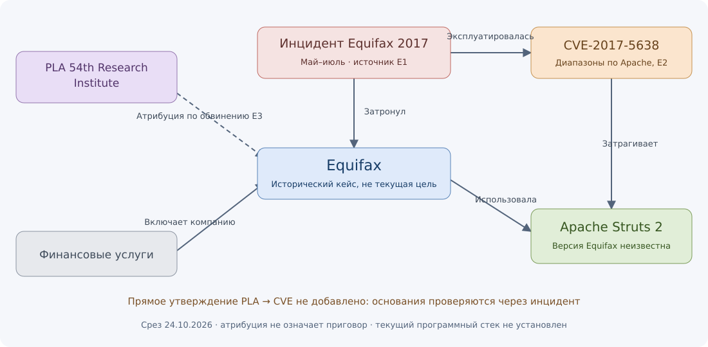

Кейс 02. Equifax: ПО, CVE и атрибуция
Аналитическая записка • срез на 24 октября 2026 года • исторический эпизод мая–июля 2017 года
Вывод для аналитика
В этом кейсе есть проверяемая техническая цепочка: Equifax использовала Apache Struts в портале споров; компания связала майско-июльский инцидент с CVE-2017-5638. Бюллетень Apache определяет затронутые диапазоны, но точная установленная версия Equifax в выбранном сообщении не раскрыта. Атрибуция PLA 54th Research Institute сохраняется как утверждение обвинения Минюста США, без вывода о доказанной виновности.
Это исторический пример вне списка текущих российских целей. Наличие технических сведений позволяет показать расчёт и проверку применимости, но не установить состояние инфраструктуры Equifax в 2026 году. Маленький индекс на сегодняшнем срезе отражает давность оснований, а не безопасность компании.
Источники и пределы проверки
Первичные страницы повторно открыты через веб-доступ 24.10.2026. Сохранены ссылки, краткие авторские пересказы и хеши локальных записей; полный архив исходных страниц не создавался. Реестр evidence.json показывает, какое утверждение поддерживает каждый источник.
| Источник | Что он даёт | Ограничение |
|---|
| E1 — сообщение Equifax, 15.09.2017 | Связь компании, портала споров и CVE; период доступа и обнаружение | Предварительные результаты самой компании |
| E2 — Apache S2-045 | Диапазоны версий, условие Jakarta Multipart parser, исправления | Описывает продукт, не установку Equifax; 19.03.2017 — дата обновления wiki |
| E3 — Минюст США, 10.02.2020 | Четверо обвиняемых, заявленная принадлежность и атрибуция эпизода | Обвинение не является приговором |
| E4 — отчёт GAO-18-559 | Дополнительная хронология и разбор факторов инцидента | Часть сведений основана на документах и объяснениях Equifax |
| E5 — официальный ответ Apache | Дата выпуска исправлений 07.03.2017 | Не устанавливает версию пострадавшей системы |
Это четыре организации-издателя, но не пять независимых подтверждений каждого факта. Материалы Apache дополняют друг друга; отчёт GAO в части событий опирается на сведения компании. Не смешиваются исходная дата публикации, обновление страницы и дата последующей проверки.
Хронология и важная неоднозначность
| Дата | Событие | Основание |
|---|
| 07.03.2017 | Apache выпустила исправленные версии | E5 |
| Март 2017 | GAO отдельно описывает более ранний доступ к порталу и отделяет его от дальнейшего эпизода | E4, печатная стр. 11 |
| 13.05–30.07.2017 | Период несанкционированного доступа по сообщению Equifax | E1 |
| 29–30.07.2017 | Обнаружена подозрительная активность; портал выведен из эксплуатации | E1 |
| 15.09.2017 | Опубликованы подробности технического вектора | E1 |
| 10.02.2020 | Минюст США сообщил об обвинении | E3 |
В нашей модели дата 13 мая обозначает начало рассматриваемого майско-июльского эпизода. Она не объявляется первым когда-либо доступом к Equifax. Мартовский эпизод автоматически не объединяется с ним и не приписывается тем же участникам. Текущая карточка инцидента не доказывает непрерывность или тождество всех событий 2017 года.
Проверенные связи
Сохранены отношения: инцидент → затронул → Equifax; инцидент → затронутое ПО → Apache Struts 2; инцидент → эксплуатировалась → CVE-2017-5638. Историческая связь Equifax → использовала → Apache Struts 2 имеет дату наблюдения 13.05.2017 и неизвестную точную версию. По новому пересказу бюллетеня добавлена проверенная связь CVE → затрагивает → продукт.
По E2 диапазоны: 2.3.5–2.3.31 и 2.5–2.5.10, при использовании Jakarta Multipart parser; исправленные версии 2.3.32 и 2.5.10.1. Дата выпуска исправлений берётся из E5. Версию исправления нельзя подставлять вместо версии Equifax. Применимость требует также конфигурационного контекста.
Связь PLA 54th Research Institute → Equifax в обзорном графе помечена как проекция атрибуции из обвинения. Самостоятельная прямая связь PLA → CVE в этом кейсе не добавлена: источник атрибуции описывает уязвимость Struts, а явный идентификатор CVE подтверждён другим источником. Путь через инцидент сохранён и позволяет проверить составное основание без превращения его в новое прямое утверждение.
Схема: граф кейса. Готовые запросы для Neo4j находятся в graph.cypher.

Расчёт на текущем срезе
Используется weighted-graph-v3. Расчёт относится к фиксированному снимку 2026-10-24T14:46:40+00:00; документы собраны и проверены позднее событий. Он не является прогнозом накануне атаки.
| Результат | Значение / 100 | Смысл |
|---|
| Текущий интерес | 5.15756e-11 | Давность исторического события ограничивает вклад в сегодняшнюю очередь. |
| Текущая техническая применимость | 1.06642e-05 | Историческое использование ПО, неизвестная версия и обычное затухание. |
| Историческое подтверждение эксплуатации | 90 | Качество полной подтверждённой цепочки; не текущий риск. |
Для исторической цепочки нужны четыре связи: инцидент затронул Equifax; в нём использовался Apache Struts 2; эксплуатировалась CVE-2017-5638; бюллетень связывает CVE с продуктом. Минимальное качество рёбер равно 0,9, поэтому отдельное историческое подтверждение даёт 100 × 0,9 = 90. Неизвестный номер версии не отменяет уже подтверждённый исторический факт.
Текущая гипотеза применимости рассчитывается отдельно. У старой связи использования отсутствуют явные confidence и basis; применены medium=0,7 и unspecified=0,6 с предупреждением. Ранее сохранённая разметка не исправляется автоматически. Для нового подтверждения эти поля обязательны. Множитель неизвестной версии остаётся 0,25, базовый технический множитель — 0,6; исторический инцидент не повышает оценку нынешней установки.
Во вкладке «Пример» дана учебная реконструкция на 15.09.2017: интерес 6,87/100 и историческое техническое подтверждение 90/100. Предполагаемая доступность выбранных проверенных связей на эту дату относится только к учебному представлению. Реальные даты сбора и проверки остаются в исходных данных. Поздняя атрибуция и CISA KEV в реконструкцию не включаются.
Альтернативы и неизвестность
- Совпадение названия Struts у другой компании не позволяет перенести на неё эту атаку, CVE или атрибуцию.
- Известные затронутые диапазоны не раскрывают точную установленную версию Equifax. Неизвестная версия не опровергает факт исторической эксплуатации, подтверждённый E1.
- Обвинение связывает конкретный эпизод с названными участниками; оно не доказывает, что группа часто атакует всю финансовую отрасль.
- Два названия CVE рядом на странице или в поиске не означают их участие в одном инциденте. В кейс не добавляется соседняя CVE-2017-9805 из другого бюллетеня.
Чувствительность и аналитическое решение
Проверены 45 сценариев на одной копии базы: исходный, 42 изменения по одному коэффициенту и два совместных изменения. Для Equifax технический индекс при отдельных изменениях лежит примерно между 0,000000615 и 0,000156296. Наибольшее влияние оказывает период затухания технических оснований.
Относительное изменение велико, хотя абсолютные баллы во всех вариантах малы. Это основание осторожно относиться к точным числам, а не объявлять методику откалиброванной. Сравнение с Novabev и подробные сценарии вынесены в проверку весов.
Решение: использовать Equifax как историческую проверку технической цепочки и ограничений атрибуции, отдельно от текущего российского мониторинга. Для современной оценки потребовались бы новые сведения о развёртывании и конфигурации. Исторический документ об исправлении или виновнике их не заменяет.
Для демонстрации: открыть E1 → показать инцидент и CVE → проверить диапазоны E2 → показать неизвестную версию → раскрыть юридическую оговорку E3 → сравнить изменённые веса. Записка опирается на указанные первоисточники; собственного технического расследования проект не проводил.